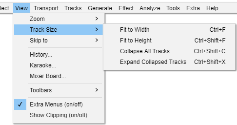

View Menu: Track Size
- Click, or hover, on any menu item in the image to read about that command. Skip the image
- 
Fit to Width Ctrl + F
Zooms out until the entire project just fits in the width of the project window.
Fit to Height Ctrl + Shift + F
Adjusts the height of tracks so they fit in the vertical space of the project window if possible. All tracks that have not been collapsed using the Track Collapse Button or Collapse All Tracks menu item are resized so that each separate waveform has the same height. Accordingly mono tracks will have the same height as each other and stereo tracks will have the same height as each other (twice the height of the mono tracks).
For example, if you have two mono tracks with considerable space underneath them you can use this command to expand each track to fill half the available vertical space.
If you want tracks to automatically fit the vertical space without the need to use the Fit Vertically command, enable Automatically fit tracks vertically zoomed in Tracks Preferences.
Collapse All Tracks Ctrl + Shift + C
Collapses all tracks to take up the minimum amount of space. To collapse or expand an individual track, click on the Track Collapse Button with triangle icon at the bottom of the track.
Expand Collapsed Tracks Ctrl + Shift + X
Expands all tracks that were collapsed using the Collapse button or Collapse All Tracks menu item to the height the tracks had before their last collapse.